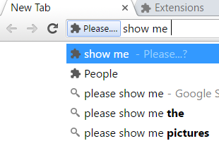
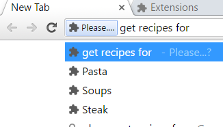
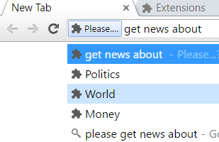
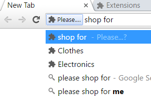
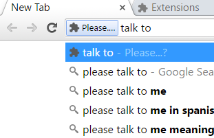
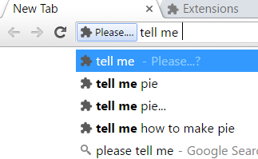
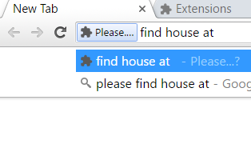

Welcome! Our chrome extension, "Please...," is here to make using the Internet easy!
Kindly follow the instructions below, and you'll be on your way to all your favorite, free sites. If you want to return to this page, simply open a new tab, or click on our icon on your navigation bar.
Click the navigation bar and type in "Please".
Press the "tab" key on your keyboard.
Type in any of the phrases on the left! For what each phrase does and how to use them, click on the phrase you want to learn about. (Not all the phrases may show up on your screen, scroll to see more!)
Facebook is one of the pinnacles of social media. This website makes it easy to keep up with friends and family, and see what they've been up to lately. Ask chrome to "Please show me..." one of your friends and family, and be taken to their page.
Click the navigation bar and type in "Please".
Press the "tab" key on your keyboard.
Type "show me" and your friend or family member's name, and press the "enter" or "return" key on your keyboard. If they are on Facebook, this will bring up their Facebook profile page where you can look at their recent statuses, pictures, and activities.
Cooking is a well beloved hobby, but there's no need to be restricted by the recipe books in your home. With the Internet you can search for virtually any recipe you want! We use the allrecipes website to fulfil your culinary needs.
Click the navigation bar and type in "Please".
Press the "tab" key on your keyboard.
Type "get recipes for" and whatever food you're hungry for, and press the "enter" or "return" key on your keyboard! This will search for recipes for this dish.
Newspapers are now a dying breed, but not for lack of news! There are now scores of online news sources for people to read and watch. One such website is CNN, a credible source of both written and video content.
Click the navigation bar and type in "Please"
Press the "tab" key on your keyboard.
Type "get news about" and whatever subject you'd like, and press the "enter" or "return" key on your keyboard. This will search CNN for news you'd like to see.
With online shopping, you can buy products from anywhere and have them delivered right to your home! Amazon is one of the most prevalent and convenient online ordering services.
Click the navigation bar and type in "Please".
Press the "tab" key on your keyboard.
Type "shop for" and the product you'd like to buy, and press the "enter" or "return" key on your keyboard. This will search for them on Amazon.
Facebook serves to make it easy to contact people. It's private messaging system allows you to talk to people in private and instantaneously, like an informal version of e-mail. So long as you are friends with this person on Facebook, you can send them a direct, private message.
Click the navigation bar and type in "Please"
Press the "tab" key on your keyboard
Type "talk to" and the person you'd like to talk to, and press the "enter" or "return" key on your keyboard. This will bring you to your message box with them.
Have something you're curious about? "How many feet are in one mile?" "What year was Obama elected president?" "What does 'ROFL' mean?"
Google Search can answer all these questions and more!
Click the navigation bar and type in "Please".
Press the "tab" key on your keyboard.
Type "tell me" and your question, and press the "enter" or "return" key on your keyboard. This will search for answers on Google Search and display them as a list of links to websites. Click on the links to see possible answers to your questions!
Going to visit a friend or family member's home for the first time? Feeling nostalgic about an old house? Need directions? Google Maps, an online map, is the solution to all those things.
Click the navigation bar and type in "Please"
Press the "tab" key on your keyboard
Type "find house at" and the address you're looking for and press the "enter" or "return" key on your keyboard. This should return and display the address.
